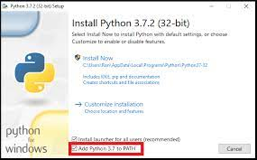

O que é o python?
Python é uma linguagem de programação de alto nível, interpretada de script, imperativa, orientada a objetos, funcional, de tipagem dinâmica e forte.
Python é uma linguagem de programação de alto nível, interpretada de script, imperativa, orientada a objetos, funcional, de tipagem dinâmica e forte.
O Visual Studio Code é um editor de código-fonte desenvolvido pela Microsoft para Windows, Linux e macOS.
Depois de baixado... Clique no arquivo e selecione a opção ADD TO PATH,
quando aparecer uma tela como essa:

Depois selecione a opção INSTALL NOW
Clique aqui para acessar o site oficial e fazer o download... Feito isso faça a instalação normalmente, não se preocupe ele é bem leve.
1° Passo:
sudo apt update
2° Passo:
sudo apt install software-properties-common
3° Passo:
sudo add-apt-repository ppa:deadsnakes/ppa
4° Passo:
sudo apt update
5° Passo:
sudo apt install python3.8.10
6° Passo:
python --version
Caso algum desses passos dê erro: "consulte um tutorial de instalação clicando aqui"
Clique aqui para acessar o site oficial
e fazer o download... Feito isso faça a instalação normalmente, não se preocupe ele é bem leve.
Depois de instalado você pode usar um dpkg -i no arquivo para instalar, ou clique duas vezes em cima do arquivo caso a primeira opção não funcione. Para testar se foi instalado dê um code --version
Clique aqui para acessar o site oficial e fazer o download... Feito isso faça a instalação normalmente, não se preocupe ele é bem leve.
Vá na play store e busque por qpython3, instale o app e abra normalmente para usá-lo
Caso tenha alguma dúvida sobre o qpython3 me mande uma mensagem no meu instagram: @erikfritas